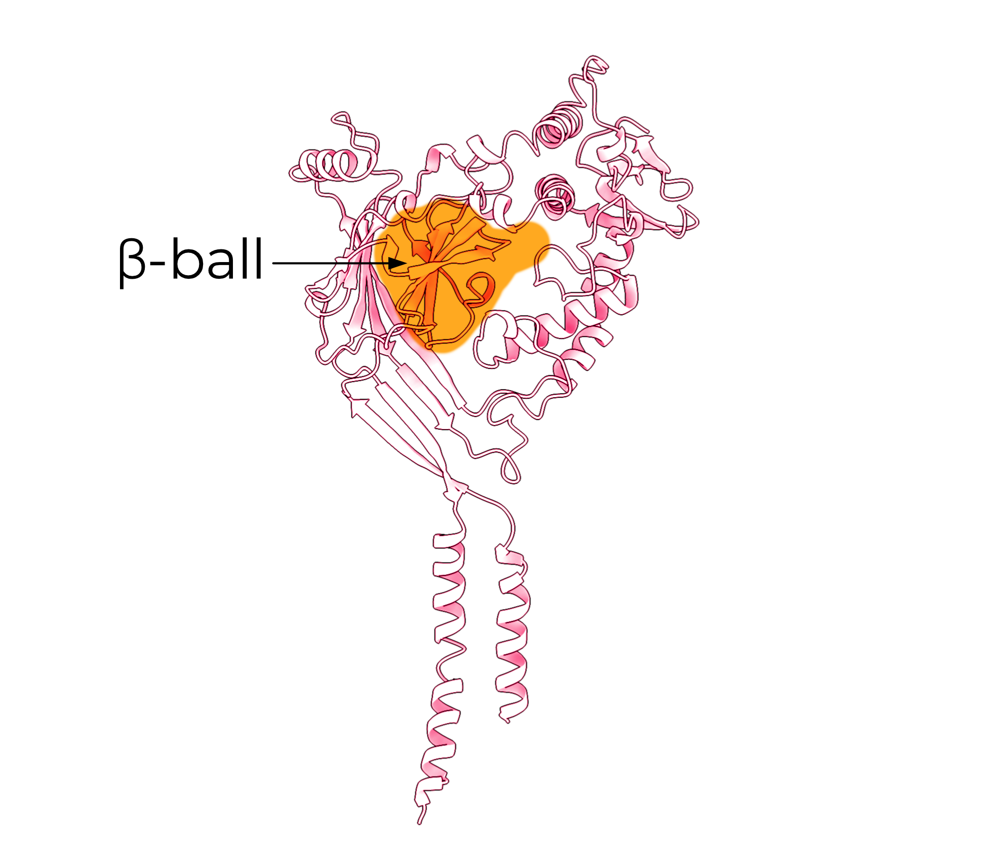
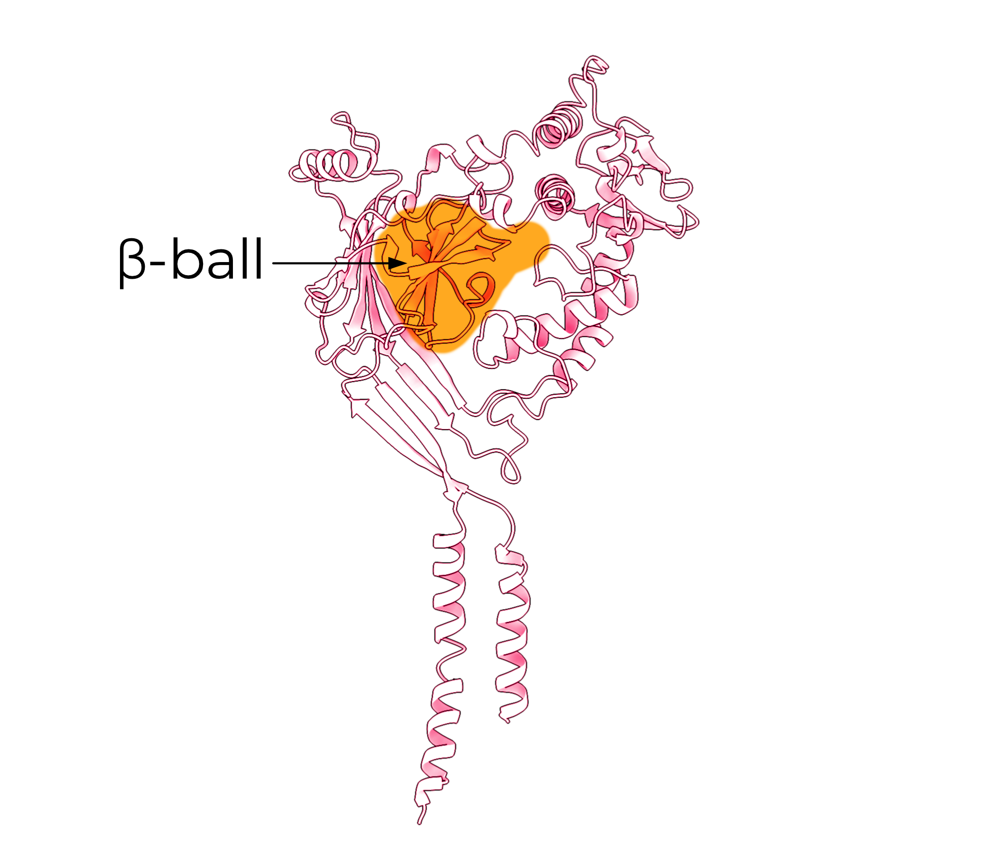
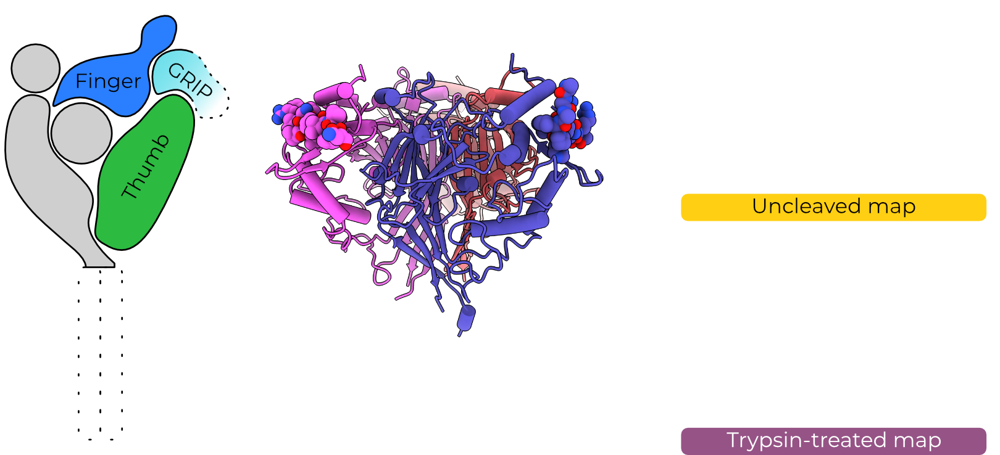
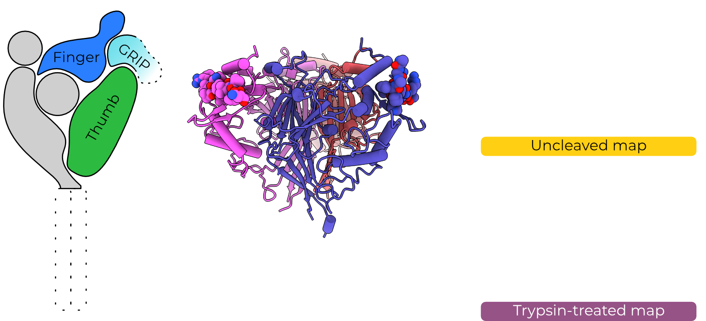
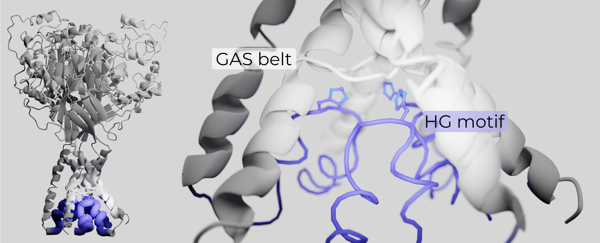

Hello world


We love salt
Photo by Mustafa Bashari on Unsplash
We love salt?
Photo by Ant Rozetsky on Unsplash
Do we love salt?

Edward Centrella at Your Brain on Sci
How do we
love salt?
Assuming coordination number of 6, from Mähler, J. & Persson, I. A Study of the Hydration of the Alkali Metal Ions in Aqueous Solution. Inorg. Chem. 51, 425–438 (2012).
Chris Briggs and Tatiana Rodrigues on Unsplash
Our taste of salt

We can discriminate salt concentrations

We can discriminate between sodium and potassium
And we do it all near-instantly!
I have a confession
I don't actually know much about taste...


My big questions
- How exactly does the channel open and close?
- How does ENaC filter so specifically for sodium over potassium?
How
does ENaC
open and close?
The Epithelial Sodium Channel


 



The Epithelial Sodium Channel

GRIP removal opens ENaC
GRIP removal opens ENaC

GRIP removal opens ENaC


Trypsin cuts purified ENaC


ECD is invariant with trypsin

 



OK well maybe the TMD moves without the ECD changing, somehow?
How
do we
look at
proteins?
Simplified model data

Simplified model data

Simplified model data

Average of ten noisy images
Simplified model data

Average of 100 noisy images
Simplified model data
Simplified model data
Ideal image (no noise)
Single noisy image
Average of ten images
Average of 100 images
But
proteins
wiggle!


The TMD is likely misfolded

The TMD is likely misfolded